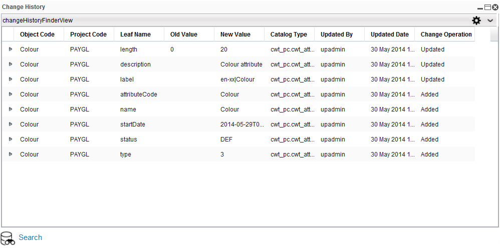
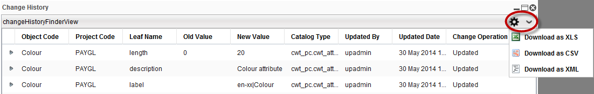

Change HistoryChanges to the catalog definition are controlled by the Change Control mechanism. The Change History form displays the revisions that have been performed for Catalog objects within a Project. Note: A project's Change History button appears with or without an open project. The following example displays the Change History form containing the revisions made to the Attribute Type's field values. Additions and changes to a field value are recorded in the Change History table. From the Attribute Type Details page, the user is able to click Change History to view the revisions made to the selected attribute. The following is an example of the Change History table for the Colour attribute. The Change Operation was Added for each field value when the Colour Attribute was first created. The object code name was then changed to Colour, shown by the Change Operation Updated.  The following table describes each column of the Change History table.
You have the option of downloading finder results as a file in one of the following formats:
 |